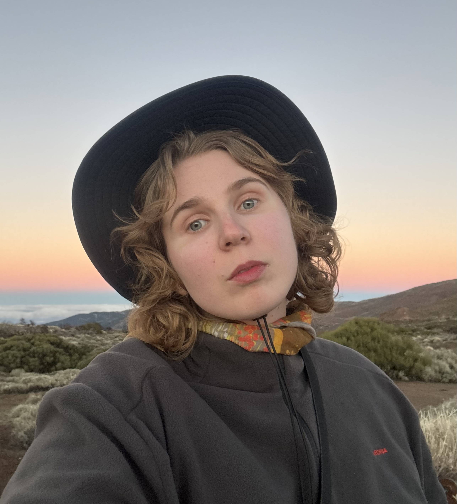
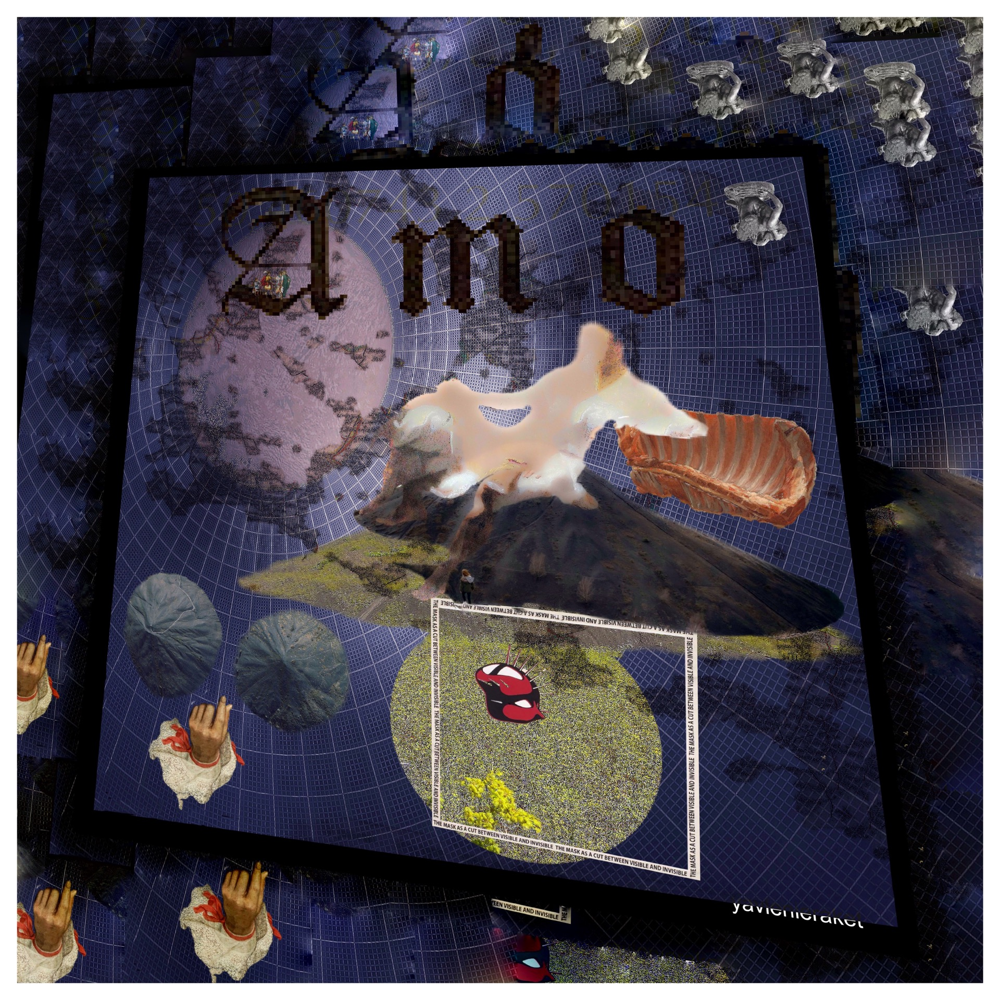

research atlas / personal website / ongoing archive
ekaterina iakovleva
projects, field notes, and island imaginaries
this is my research atlas: main information and archive with future entries.
I work at the intersection of multi-species anthropology, island studies, critical AI thought, metadata and digital humanities, exhibition studies, and climate futures.
bio
I am Katya (Ekaterina) Iakovleva, a researcher, curator, and data practitioner based in Paris. I study the anthropology of climate change and island studies, and the ways they refract through contemporary art. I am equally drawn to critical thinking about artificial intelligence and future studies, what it means to imagine, model, and contest the futures we are building.
In practice, I curate projects with and for artists, and I work as a data visualiser and coder, building tools that make complex realities legible and open to intervention. This page shares recent projects, ideas, and things I find fascinating to know. The aim is simple: to build radical futures together.

projects
click a card to open the full project dossier

biography of the river aare
research-based digital project on materiality, landscape and environmental memory

corfu. islands imaginaries
performative philosophical practices on visible and invisible island areas

islands listening
film, 2024. more-than-human sound coding and improvisation on Corfu

multispecies tour in paris
collaborative performance during trash manifestation, Paris, 2023

exhibition repository
repositorium: !message! dew point reached

oceanity in contemporary art
research on ocean phenomenology and more-than-wet ontology

land of tenderness
installation, 2021. scarves, coal, and industrial tenderness

un bon endroit pour cacher un cadavre
exhibition text on sculpture, vitality, hyperobjects and hidden bodies
cv
full cv embedded + downloadable pdf
ekaterina iakovleva
researcher • curator • data scientist • paris, france
Full CV is available directly on-site as a document view: open full cv
If the preview does not load in your browser, use the download button or open full cv page.
selected experience
- Research Engineer, Sciences Po, Paris (2025-present)
- Research Engineer, CNRS, Paris (2024-2025)
- Data Scientist, EHESS, Gargantua / Savoirs Project (2024)
- Research Assistant, Ionian University, Corfu (2023-2025)
- Researcher, Navigation Laboratory, Institut Jean Nicod (ENS/EHESS), Paris
competencies
- Anthropological and ethnographic fieldwork, multispecies ethnography
- Spatial and cartographic analysis, data modelling
- Python, R, SQL, NLP, computer vision, Tableau, Plotly Dash
- API and data infrastructure design, Git/GitHub, Docker, CI/CD
- Curation, exhibition production, cultural mediation, residency coordination
news and thoughts
daily log + archive
Use the dedicated page to publish new notes each day. Every entry is archived automatically by date.
open news and thoughts archivecontact
Open for collaborations in research, curation, publication, exhibitions, and data visualization.